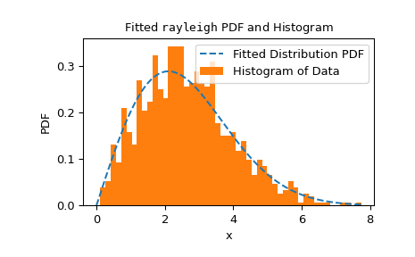
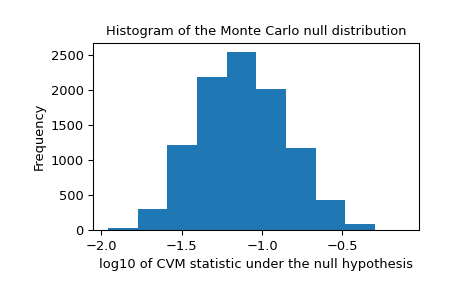

Perform a goodness of fit test comparing data to a distribution family.
Given a distribution family and data, perform a test of the null hypothesis
that the data were drawn from a distribution in that family. Any known
parameters of the distribution may be specified. Remaining parameters of
the distribution will be fit to the data, and the p-value of the test
is computed accordingly. Several statistics for comparing the distribution
to data are available.
The object representing the distribution family under the null
hypothesis.
data1D array_like
Finite, uncensored data to be tested.
known_paramsdict, optional
A dictionary containing name-value pairs of known distribution
parameters. Monte Carlo samples are randomly drawn from the
null-hypothesized distribution with these values of the parameters.
Before the statistic is evaluated for each Monte Carlo sample, only
remaining unknown parameters of the null-hypothesized distribution
family are fit to the samples; the known parameters are held fixed.
If all parameters of the distribution family are known, then the step
of fitting the distribution family to each sample is omitted.
fit_paramsdict, optional
A dictionary containing name-value pairs of distribution parameters
that have already been fit to the data, e.g. using scipy.stats.fit
or the fit method of dist. Monte Carlo samples are drawn from the
null-hypothesized distribution with these specified values of the
parameter. On those Monte Carlo samples, however, these and all other
unknown parameters of the null-hypothesized distribution family are
fit before the statistic is evaluated.
guessed_paramsdict, optional
A dictionary containing name-value pairs of distribution parameters
which have been guessed. These parameters are always considered as
free parameters and are fit both to the provided data as well as
to the Monte Carlo samples drawn from the null-hypothesized
distribution. The purpose of these guessed_params is to be used as
initial values for the numerical fitting procedure.
statistic{“ad”, “ks”, “cvm”, “filliben”} or callable, optional
The statistic used to compare data to a distribution after fitting
unknown parameters of the distribution family to the data. The
Anderson-Darling (“ad”) [1], Kolmogorov-Smirnov (“ks”) [1],
Cramer-von Mises (“cvm”) [1], and Filliben (“filliben”) [7]
statistics are available. Alternatively, a callable with signature
(dist,data,axis) may be supplied to compute the statistic. Here
dist is a frozen distribution object (potentially with array
parameters), data is an array of Monte Carlo samples (of
compatible shape), and axis is the axis of data along which
the statistic must be computed.
n_mc_samplesint, default: 9999
The number of Monte Carlo samples drawn from the null hypothesized
distribution to form the null distribution of the statistic. The
sample size of each is the same as the given data.
Pseudorandom number generator state used to generate the Monte Carlo
samples.
If random_state is None (default), the
numpy.random.RandomState singleton is used.
If random_state is an int, a new RandomState instance is used,
seeded with random_state.
If random_state is already a Generator or RandomState
instance, then the provided instance is used.
An object representing the fit of the provided dist to data.
This object includes the values of distribution family parameters
that fully define the null-hypothesized distribution, that is,
the distribution from which Monte Carlo samples are drawn.
statisticfloat
The value of the statistic comparing provided data to the
null-hypothesized distribution.
pvaluefloat
The proportion of elements in the null distribution with
statistic values at least as extreme as the statistic value of the
provided data.
null_distributionndarray
The value of the statistic for each Monte Carlo sample
drawn from the null-hypothesized distribution.
Notes
This is a generalized Monte Carlo goodness-of-fit procedure, special cases
of which correspond with various Anderson-Darling tests, Lilliefors’ test,
etc. The test is described in [2], [3], and [4] as a parametric
bootstrap test. This is a Monte Carlo test in which parameters that
specify the distribution from which samples are drawn have been estimated
from the data. We describe the test using “Monte Carlo” rather than
“parametric bootstrap” throughout to avoid confusion with the more familiar
nonparametric bootstrap, and describe how the test is performed below.
Traditional goodness of fit tests
Traditionally, critical values corresponding with a fixed set of
significance levels are pre-calculated using Monte Carlo methods. Users
perform the test by calculating the value of the test statistic only for
their observed data and comparing this value to tabulated critical
values. This practice is not very flexible, as tables are not available for
all distributions and combinations of known and unknown parameter values.
Also, results can be inaccurate when critical values are interpolated from
limited tabulated data to correspond with the user’s sample size and
fitted parameter values. To overcome these shortcomings, this function
allows the user to perform the Monte Carlo trials adapted to their
particular data.
Algorithmic overview
In brief, this routine executes the following steps:
Fit unknown parameters to the given data, thereby forming the
“null-hypothesized” distribution, and compute the statistic of
this pair of data and distribution.
Draw random samples from this null-hypothesized distribution.
Fit the unknown parameters to each random sample.
Calculate the statistic between each sample and the distribution that
has been fit to the sample.
Compare the value of the statistic corresponding with data from (1)
against the values of the statistic corresponding with the random
samples from (4). The p-value is the proportion of samples with a
statistic value greater than or equal to the statistic of the observed
data.
In more detail, the steps are as follows.
First, any unknown parameters of the distribution family specified by
dist are fit to the provided data using maximum likelihood estimation.
(One exception is the normal distribution with unknown location and scale:
we use the bias-corrected standard deviation np.std(data,ddof=1) for
the scale as recommended in [1].)
These values of the parameters specify a particular member of the
distribution family referred to as the “null-hypothesized distribution”,
that is, the distribution from which the data were sampled under the null
hypothesis. The statistic, which compares data to a distribution, is
computed between data and the null-hypothesized distribution.
Next, many (specifically n_mc_samples) new samples, each containing the
same number of observations as data, are drawn from the
null-hypothesized distribution. All unknown parameters of the distribution
family dist are fit to each resample, and the statistic is computed
between each sample and its corresponding fitted distribution. These
values of the statistic form the Monte Carlo null distribution (not to be
confused with the “null-hypothesized distribution” above).
The p-value of the test is the proportion of statistic values in the Monte
Carlo null distribution that are at least as extreme as the statistic value
of the provided data. More precisely, the p-value is given by
\[p = \frac{b + 1}
{m + 1}\]
where \(b\) is the number of statistic values in the Monte Carlo null
distribution that are greater than or equal to the statistic value
calculated for data, and \(m\) is the number of elements in the
Monte Carlo null distribution (n_mc_samples). The addition of \(1\)
to the numerator and denominator can be thought of as including the
value of the statistic corresponding with data in the null distribution,
but a more formal explanation is given in [5].
Limitations
The test can be very slow for some distribution families because unknown
parameters of the distribution family must be fit to each of the Monte
Carlo samples, and for most distributions in SciPy, distribution fitting
performed via numerical optimization.
Anti-Pattern
For this reason, it may be tempting
to treat parameters of the distribution pre-fit to data (by the user)
as though they were known_params, as specification of all parameters of
the distribution precludes the need to fit the distribution to each Monte
Carlo sample. (This is essentially how the original Kilmogorov-Smirnov
test is performed.) Although such a test can provide evidence against the
null hypothesis, the test is conservative in the sense that small p-values
will tend to (greatly) overestimate the probability of making a type I
error (that is, rejecting the null hypothesis although it is true), and the
power of the test is low (that is, it is less likely to reject the null
hypothesis even when the null hypothesis is false).
This is because the Monte Carlo samples are less likely to agree with the
null-hypothesized distribution as well as data. This tends to increase
the values of the statistic recorded in the null distribution, so that a
larger number of them exceed the value of statistic for data, thereby
inflating the p-value.
M. A. Stephens (1974). “EDF Statistics for Goodness of Fit and
Some Comparisons.” Journal of the American Statistical Association,
Vol. 69, pp. 730-737.
C. Genest, & B Rémillard. (2008). “Validity of the parametric
bootstrap for goodness-of-fit testing in semiparametric models.”
Annales de l’IHP Probabilités et statistiques. Vol. 44. No. 6.
I. Kojadinovic and J. Yan (2012). “Goodness-of-fit testing based on
a weighted bootstrap: A fast large-sample alternative to the
parametric bootstrap.” Canadian Journal of Statistics 40.3: 480-500.
B. Phipson and G. K. Smyth (2010). “Permutation P-values Should
Never Be Zero: Calculating Exact P-values When Permutations Are
Randomly Drawn.” Statistical Applications in Genetics and Molecular
Biology 9.1.
H. W. Lilliefors (1967). “On the Kolmogorov-Smirnov test for
normality with mean and variance unknown.” Journal of the American
statistical Association 62.318: 399-402.
Filliben, James J. “The probability plot correlation coefficient
test for normality.” Technometrics 17.1 (1975): 111-117.
Examples
A well-known test of the null hypothesis that data were drawn from a
given distribution is the Kolmogorov-Smirnov (KS) test, available in SciPy
as scipy.stats.ks_1samp. Suppose we wish to test whether the following
data:
were sampled from a normal distribution. To perform a KS test, the
empirical distribution function of the observed data will be compared
against the (theoretical) cumulative distribution function of a normal
distribution. Of course, to do this, the normal distribution under the null
hypothesis must be fully specified. This is commonly done by first fitting
the loc and scale parameters of the distribution to the observed
data, then performing the test.
An advantage of the KS-test is that the p-value - the probability of
obtaining a value of the test statistic under the null hypothesis as
extreme as the value obtained from the observed data - can be calculated
exactly and efficiently. goodness_of_fit can only approximate these
results.
The statistic matches exactly, but the p-value is estimated by forming
a “Monte Carlo null distribution”, that is, by explicitly drawing random
samples from scipy.stats.norm with the provided parameters and
calculating the stastic for each. The fraction of these statistic values
at least as extreme as res.statistic approximates the exact p-value
calculated by scipy.stats.ks_1samp.
However, in many cases, we would prefer to test only that the data were
sampled from one of any member of the normal distribution family, not
specifically from the normal distribution with the location and scale
fitted to the observed sample. In this case, Lilliefors [6] argued that
the KS test is far too conservative (that is, the p-value overstates
the actual probability of rejecting a true null hypothesis) and thus lacks
power - the ability to reject the null hypothesis when the null hypothesis
is actually false.
Indeed, our p-value above is approximately 0.28, which is far too large
to reject the null hypothesis at any common significance level.
Consider why this might be. Note that in the KS test above, the statistic
always compares data against the CDF of a normal distribution fitted to the
observed data. This tends to reduce the value of the statistic for the
observed data, but it is “unfair” when computing the statistic for other
samples, such as those we randomly draw to form the Monte Carlo null
distribution. It is easy to correct for this: whenever we compute the KS
statistic of a sample, we use the CDF of a normal distribution fitted
to that sample. The null distribution in this case has not been
calculated exactly and is tyically approximated using Monte Carlo methods
as described above. This is where goodness_of_fit excels.
Indeed, this p-value is much smaller, and small enough to (correctly)
reject the null hypothesis at common significance levels, including 5% and
2.5%.
However, the KS statistic is not very sensitive to all deviations from
normality. The original advantage of the KS statistic was the ability
to compute the null distribution theoretically, but a more sensitive
statistic - resulting in a higher test power - can be used now that we can
approximate the null distribution
computationally. The Anderson-Darling statistic [1] tends to be more
sensitive, and critical values of the this statistic have been tabulated
for various significance levels and sample sizes using Monte Carlo methods.
Here, the observed value of the statistic exceeds the critical value
corresponding with a 1% significance level. This tells us that the p-value
of the observed data is less than 1%, but what is it? We could interpolate
from these (already-interpolated) values, but goodness_of_fit can
estimate it directly.
A further advantage is that use of goodness_of_fit is not limited to
a particular set of distributions or conditions on which parameters
are known versus which must be estimated from data. Instead,
goodness_of_fit can estimate p-values relatively quickly for any
distribution with a sufficiently fast and reliable fit method. For
instance, here we perform a goodness of fit test using the Cramer-von Mises
statistic against the Rayleigh distribution with known location and unknown
scale.
This executes fairly quickly, but to check the reliability of the fit
method, we should inspect the fit result.
>>> res.fit_result# location is as specified, and scale is reasonable params: FitParams(loc=0.0, scale=2.1026719844231243) success: True message: 'The fit was performed successfully.'>>> importmatplotlib.pyplotasplt# matplotlib must be installed to plot>>> res.fit_result.plot()>>> plt.show()

If the distribution is not fit to the observed data as well as possible,
the test may not control the type I error rate, that is, the chance of
rejecting the null hypothesis even when it is true.
We should also look for extreme outliers in the null distribution that
may be caused by unreliable fitting. These do not necessarily invalidate
the result, but they tend to reduce the test’s power.
>>> _,ax=plt.subplots()>>> ax.hist(np.log10(res.null_distribution))>>> ax.set_xlabel("log10 of CVM statistic under the null hypothesis")>>> ax.set_ylabel("Frequency")>>> ax.set_title("Histogram of the Monte Carlo null distribution")>>> plt.show()

This plot seems reassuring.
If fit method is working reliably, and if the distribution of the test
statistic is not particularly sensitive to the values of the fitted
parameters, then the p-value provided by goodness_of_fit is expected to
be a good approximation.